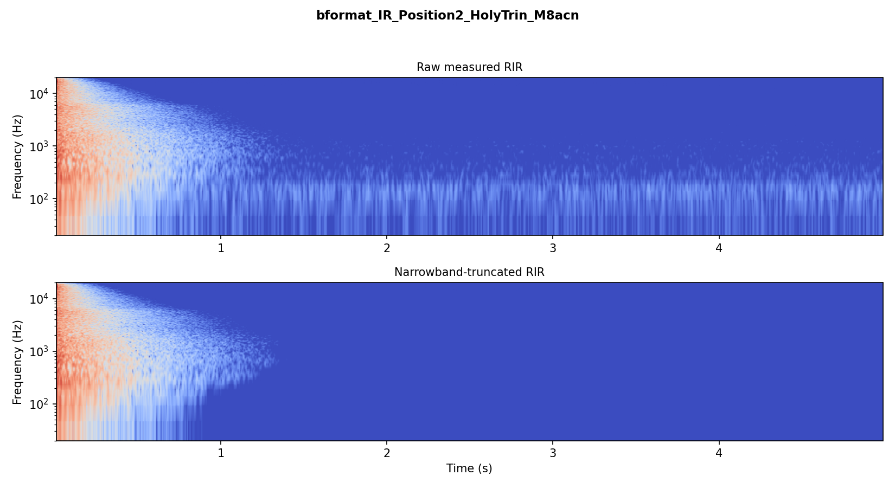
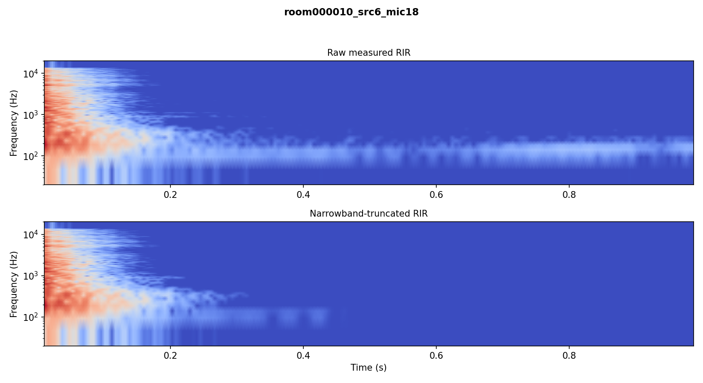

Dataset and Methodology for Narrowband Truncation of Measured Room Impulse Responses
Room impulse responses (RIRs) underpin the characterization of room acoustics, but public RIR datasets are distributed mostly in raw, noisy form, which lowers acoustic parameter estimation accuracy and impacts the performance of RIR-based machine-learning models. Previous truncation efforts find a single broadband point where the RIR and noise energies are equal, and cannot reliably separate frequency-dependent decay from the noise. Per-octave-band truncation is also insufficient for preserving detailed decay properties in RIRs.
This study addresses these issues by providing a database of measured RIRs truncated using a narrowband, per-frequency truncation pipeline for single and repeated RIR measurements, with added outlier detection to remove narrowband ringing. We validate the method against the broadband and per-octave baselines on synthetic RIRs, and show the effect of using truncated signals on the results of RIR representation learning. Finally, we evaluate through a subjective test whether the truncated RIRs are perceived as less noisy and free from artifacts. The processed database is released as open source, aggregating several public sources, to support reproducible room-acoustics research.
Keywords: room impulse response, impulse response truncation, reverberation time, open dataset
Full manuscript
The paper is not public yet. This tab will hold the PDF and the arXiv/ICASSP link once it is submitted.
Narrowband RIR truncation
A measured RIR consists of the impulse response h(t) and an additive noise term u(t). The truncation point tT is the time at which the decaying energy of the RIR and the noise energy are equal. Existing methods assume that the decay rate and noise floor are constant within a frequency band, and therefore estimate at best a single truncation point per octave band, which leads to a staircase-like decay across frequency and may be insufficient for RIRs with detailed narrowband decays, for instance when a flutter echo occurs. We instead determine a truncation point for every frequency bin of the short-time Fourier transform (STFT):
where H and U are the STFTs of h and u, and k is the frequency-bin index. Because the noisy decay varies bin to bin and can be contaminated by measurement artifacts and ringing, the pipeline adds pre- and post-processing steps to make the estimate robust:
- Raw measured RIR
- Per-channel resample to 48 kHz
- DC offset removal
- Short-time Fourier transform (per-bin analysis)
- Per-bin truncation time via Lundeby's method for a single measurement, or the covariance method across repeated measurements
- Ringing outlier detection and band-expansion correction
- Time-frequency masking and inverse STFT → truncated RIR
Preprocessing
Truncation accuracy does not depend on the sampling rate, so resampling is optional; all RIRs are unified to 48 kHz for ease of use of the released database. DC correction by mean subtraction is necessary: a constant hardware offset keeps the envelope of the 0 Hz bin flat and prevents that bin from ever being truncated. An offset of about −2×10−6 was observed in three of the five recording channels of the Arni dataset.
Truncation point determination
The STFT uses 1024 frequency bins, a 21.3 ms Hamming window and 50% overlap. For a single measurement, Lundeby's method determines the decay rate and noise floor of each bin and iteratively estimates their intersection. For repeated measurements, the covariance between pairs of RIRs is smoothed with unimodal regression and the truncation point follows from the covariance of the noise floor. A binary mask built from the per-bin truncation times is multiplied with the STFT and inverted.
Outlier detection
Both methods are sensitive to narrowband ringing: bins whose truncation time deviates sharply from their spectral neighbours. A bin is flagged when its truncation time exceeds 1.25× the median of its 1/3-octave neighbourhood; every bin within 150 Hz of a flagged bin is replaced by the median of the healthy bins in a full-octave neighbourhood, over 100 Hz to 18 kHz. The parameters were set by sweeping a 3×5×3 grid against 107 RIRs across four datasets with manually confirmed ringing.
An open database of narrowband-truncated RIRs
The truncated RIR database is released as an open-source collection on Hugging Face. The processed RIRs are derived only from datasets that allow open publishing of derivative work, such as CC-BY 4.0, MIT or Apache 2.0 licenses, and the collection is organised as subsets, one per original source, so that it can keep growing as further public RIR datasets are processed.
Each source folder contains its truncated RIRs in the file format of the primary dataset (32-bit float WAV or SOFA), a flat naming scheme that folds the original directory hierarchy into the filename, and an attribution matrix linking the primary repositories and licenses.
| Source | Origin | License |
|---|---|---|
| Arni | Prawda, Schlecht & Välimäki (2022) · variable-acoustics room, Aalto Acoustics Lab | CC BY 4.0 |
| OpenAIR | Murphy et al. · AudioLab, University of York | CC BY 4.0 |
| Aachen IR Database | Jeub, Schäfer & Vary (2009) · RWTH Aachen | MIT |
| MRTD | Götz et al. (2024) · Multi-Room Transition Dataset | CC BY 4.0 |
| TH Köln SRIR | Lübeck, Arend & Pörschmann (2021) · high-resolution spatial RIRs | CC BY 4.0 |
| C4DM RIR Data Set | Stewart & Sandler (2010) · Centre for Digital Music, QMUL | CC BY-NC-SA 4.0 |
| BUT ReverbDB | Szöke et al. (2018) · Brno University of Technology | Apache 2.0 |
| MOTUS | Götz, Schlecht & Pulkki (2021) · higher-order Ambisonic RIRs, varying furniture | CC BY 4.0 |
| EchoThief | Warren · EchoThief Impulse Response Library | custom |
| Sauna RIR dataset | Prawda, Pitkänen & Schlecht (2024) | CC BY 4.0 |
| REVERB Challenge | Kinoshita et al. | CC BY 4.0 |
| dEchorate (pending) | Di Carlo et al. (2021) · calibrated room with controllable panels | CC BY 4.0 |
Attribution to each original source is provided in the release metadata, together with citation instructions per subset. Where a primary database uses a custom license, its license file is included as-is.
Does per-bin truncation recover the right cut?
The method is validated on three fronts: against ground truth on synthetic responses, against octave-band truncation on measured responses, and through its effect on RIR representation learning. Perceptual transparency is assessed separately in the listening test below.
Synthetic RIRs with known decay
100 impulse responses synthesised with a feedback delay network (pyFDN, 32 delays of 500 to 2000 samples, graphic equalisers as attenuation filters), with low-passed decay: T60 drawn uniformly from 1.2 to 2 s at DC and 0.2 to 1 s at Nyquist, crossover between 1 and 4 kHz. White noise was added at peak SNRs between 30 and 60 dB, extending 1 to 1.8 s beyond the response.
Lundeby's method was applied at three granularities: broadband, octave-band and the proposed narrowband. Narrowband and octave-band truncation both reach a median error below 10% of the expected truncation time above 300 Hz, with the proposed method more accurate at low frequencies and with less variance overall. Broadband truncation shows the largest errors across all frequencies.
Figure from the paper (relative error vs. frequency) pending.
Measured RIRs
On a RIR from the MRTD dataset, truncation in full octave bands without inter-band interpolation or smoothing produces the characteristic staircase-like decay across frequency. The proposed narrowband-smoothed method yields a smooth, detailed energy decay on the same response.
Figure from the paper and quantitative parameter comparison pending.
Effect on RIR representation learning
To assess the applicability of the released database, we reproduce the study on the effect of noise-model mismatch on learned RIR representations and on the downstream task of reverberation time estimation (Prawda, Meyer-Kahlen & Schlecht, EUSIPCO 2026), replacing the raw RIRs with their truncated counterparts.
Results pending.
Outlier correction in action
Measurement artifacts can produce abnormally long truncation times in isolated bins, for instance around 5 kHz. The outlier detection smooths those bins before masking, preventing the error from propagating to the final truncated RIR.
Four-panel mask figure from the paper pending.
Raw vs. narrowband-truncated
Three pairs, one per single-measurement source. Each pair is the same measured RIR before and after truncation, loudness-matched with a single gain measured on the raw member so that the level relationship within the pair is preserved. The spectrograms are the before/after plots produced by the pipeline.
Use headphones in a quiet environment. RIRs are short and impulsive: set a moderate playback level before pressing play.


Paired-comparison listening test
A paired-comparison listening test assesses whether the narrowband truncation is perceptually transparent: whether the removed background noise is audible, and whether the reverberant decay is preserved. Each trial presents two short audio stimuli and asks a couple of quick questions about what you hear.
The test runs on goListen and takes around 30 minutes. Participants are recruited in two groups: a reference sample tested under controlled conditions in the listening booths at Aalto University, and an online panel. Twenty participants are targeted, following ITU-R BS.1116 for systems expected to be nearly transparent.
Use good headphones in a quiet place. The test begins with three practice trials to set your volume and get familiar with the interface; they do not count towards the results. Responses are anonymous, and participation is voluntary.
The test is currently open. Results will be reported here once data collection is complete.
Take the listening testExample stimuli from the test
Two of the trial conditions, beyond the raw/truncated pairs shown under Audio examples. First, the same stairway measurement featured there, now convolved with speech, to check that truncation stays transparent on a speech-relevant signal rather than only on the bare RIR. Second, one of the six deliberate mis-truncation controls used in the test: the truncation point is moved to the midpoint of the response, well before the true noise floor, to confirm that participants can hear an artifact when one is actually present.
Negative control, not pipeline output: cut at the midpoint of the decay on purpose, so the noise loss is clearly audible.
Reproduce the pipeline
The truncation pipeline, dataset loaders and quality classifier are released as Python code on GitHub. produce_dataset.py runs the full pipeline over a raw source collection and writes the truncated RIRs together with the before/after spectrograms.
Citation
Placeholder entry: venue, year and DOI to be filled in once the paper is accepted.
@article{vallejo2026narrowband,
title = {Dataset and Methodology for Narrowband Truncation of
Measured Room Impulse Responses},
author = {Vallejo Reyes, Mario Alberto and Meyer-Kahlen, Nils and Prawda, Karolina},
year = {2026},
note = {Submitted to ICASSP 2027}
}